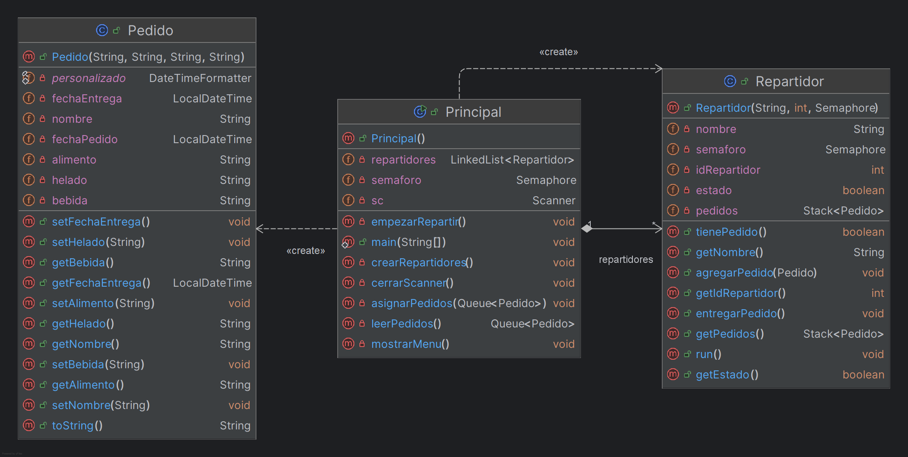

Introducción
Este proyecto tiene como objetivo simular el proceso de entrega de pedidos en un restaurante, abordando la gestión eficiente de pedidos y la asignación dinámica a repartidores. Se busca optimizar el flujo de trabajo desde la recepción del pedido hasta su entrega, utilizando estructuras de datos fundamentales como colas y pilas.
Descripción del Problema
En un restaurante, la gestión eficiente de los pedidos y su entrega oportuna son cruciales para la satisfacción del cliente. La falta de un sistema organizado puede resultar en demoras, errores en las entregas y, en última instancia, afectar la rentabilidad del negocio.
Este proyecto aborda este problema mediante la simulación de un sistema de entrega de pedidos (extremadamente básico) que utiliza una cola para gestionar los pedidos entrantes y una lista de repartidores, cada uno con una pila para organizar los pedidos asignados. Esta simulación permite visualizar y analizar el flujo de pedidos, la asignación a repartidores y el proceso de entrega.
Detalles de Implementación
Para simular el sistema de entrega de pedidos, se implementaron las siguientes estructuras de datos:
-
Cola (Queue): Se utiliza una cola para almacenar los pedidos entrantes. Los nuevos pedidos se añaden al final de la cola y los repartidores toman los pedidos del principio, siguiendo el principio FIFO (First-In, First-Out). Esto asegura que los pedidos se atiendan en el orden en que se recibieron.
-
Pila (Stack): Cada repartidor tiene una pila para gestionar los pedidos que le son asignados. Los nuevos pedidos se añaden a la cima de la pila y el repartidor entrega primero el pedido que se encuentra en la cima, siguiendo el principio LIFO (Last-In, First-Out). Esto permite al repartidor gestionar eficientemente sus entregas, ya que el último pedido añadido es el primero en ser entregado.
Clases principales
El programa se compone de las siguientes clases:
-
Pedido: Representa el pedido que hace un cliente.
-
Repartidor: Representa a un repartidor que realizará entregas
-
Principal: Clase principal que contiene el flujo del programa y la lógica de la simulación.
Diagrama de clases

Herramientas utilizadas
Para el desarrollo de este proyecto se utilizaron las siguientes herramientas:
-
Visual Studio Code 1.74.3: Editor de código ligero utilizado para la edición rápida de archivos y para facilitar el trabajo colaborativo en equipo gracias a la extensión Live Share. https://code.visualstudio.com/
-
IntelliJ IDEA Community Edition 2023.2: IDE utilizado para generar el diagrama de clases UML de forma visual, a partir del código fuente del proyecto. https://www.jetbrains.com/es-es/idea/
-
Jgrasp 2.0.2_02: Entorno de desarrollo utilizado para pruebas y depuración del código. http://www.jgrasp.org/
-
Doxygen 1.9.6: Herramienta de generación de documentación. http://www.doxygen.org/
Ejemplo de Ejecución
A continuación, un ejemplo de la ejecución del programa:
Número de pedidos: 3
-
Ingrese el alimento (DESAYUNO, COMIDA, O CENA): Omelette
-
Ingrese la bebida: Cafe
-
Ingrese el helado: Helado triple chocolate
-
A nombre de quién es el pedido: Maria
-
Ingrese el alimento (DESAYUNO, COMIDA, O CENA): Milanesa de pollo
-
Ingrese la bebida: Limonada
-
Ingrese el helado: Helado oreo
-
A nombre de quién es el pedido: Juan
-
Ingrese el alimento (DESAYUNO, COMIDA, O CENA): Pizza
-
Ingrese la bebida: Refresco
-
Ingrese el helado: Helado napolitano
-
A nombre de quién es el pedido: Ana
SALIDA DEL PROGRAMA:
Repartidor1 entrego el Pedido a nombre de Ana
alimento Pizza
bebida Refresco
helado Helado napolitano
Fecha del pedido 02/11/2024 16:56:09
fechaEntrega 02/11/2024 16:56:15
Repartidor1 entrego el Pedido a nombre de Juan
alimento Milanesa de pollo
bebida Limonada
helado Helado oreo
Fecha del pedido 02/11/2024 16:55:46
fechaEntrega 02/11/2024 16:56:44
Repartidor1 entrego el Pedido a nombre de Maria
alimento Omelette
bebida Cafe
helado Helado triple de chocolate
Fecha del pedido 02/11/2024 16:55:24
fechaEntrega 02/11/2024 16:56:59
Limitaciones
El proyecto actual presenta las siguientes limitaciones:
-
Capacidad limitada de los repartidores: Cada repartidor solo puede manejar un máximo de 3 pedidos a la vez.
-
Asignación secuencial de pedidos: Los pedidos se asignan a los repartidores de forma secuencial, sin considerar la distancia o la carga de trabajo de cada repartidor.
-
Interfaz de usuario básica: La interacción con el usuario se realiza a través de la consola.
Posibles Mejoras
-
Implementar un algoritmo de asignación de pedidos más eficiente que considere más factores.
-
Desarrollar una interfaz gráfica de usuario (GUI) para una mejor interacción con el usuario.
-
Incorporar la gestión de tiempos de entrega y la posibilidad de que los repartidores rechacen pedidos si su capacidad está llena.
Autores
-
Cruz Bautista Mauricio Raciel 3SB
-
Enriquez Rodriguez Alejandro Guillermo 3SB